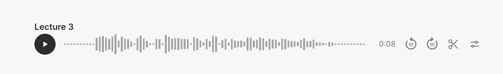
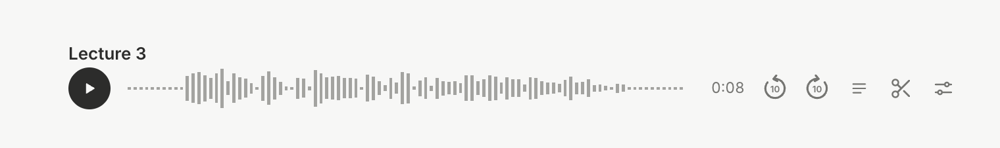
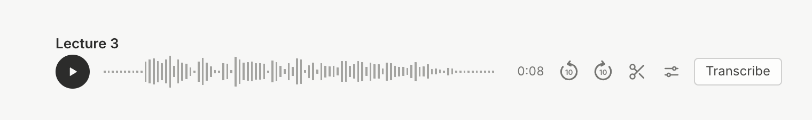
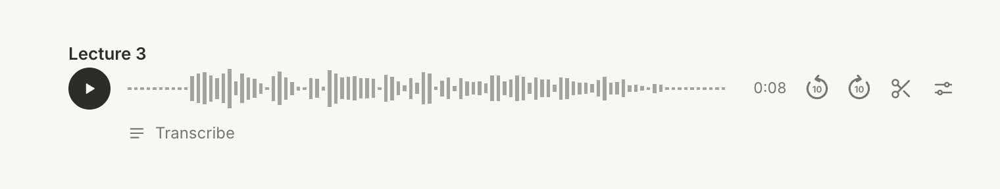
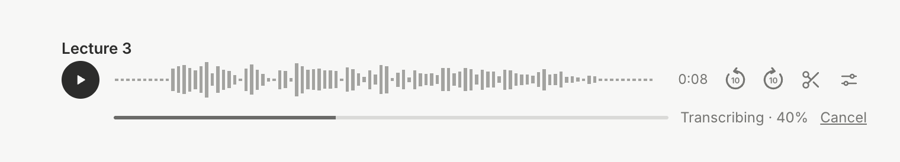
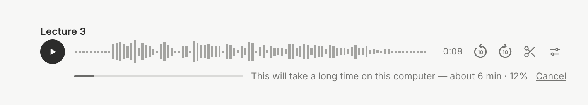
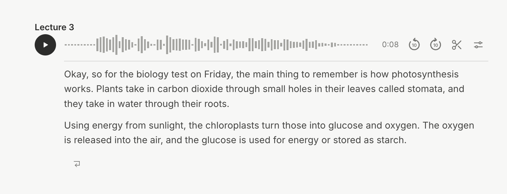
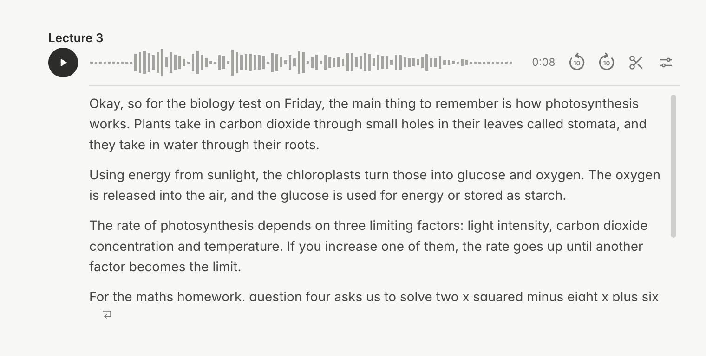
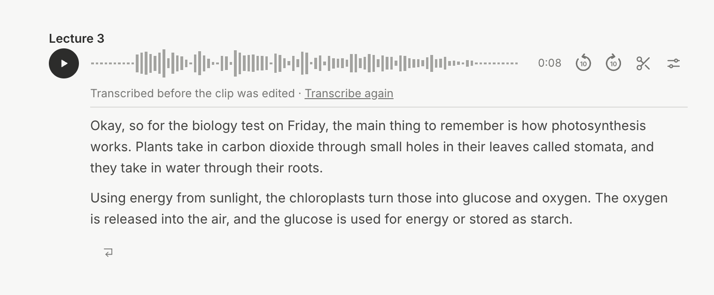
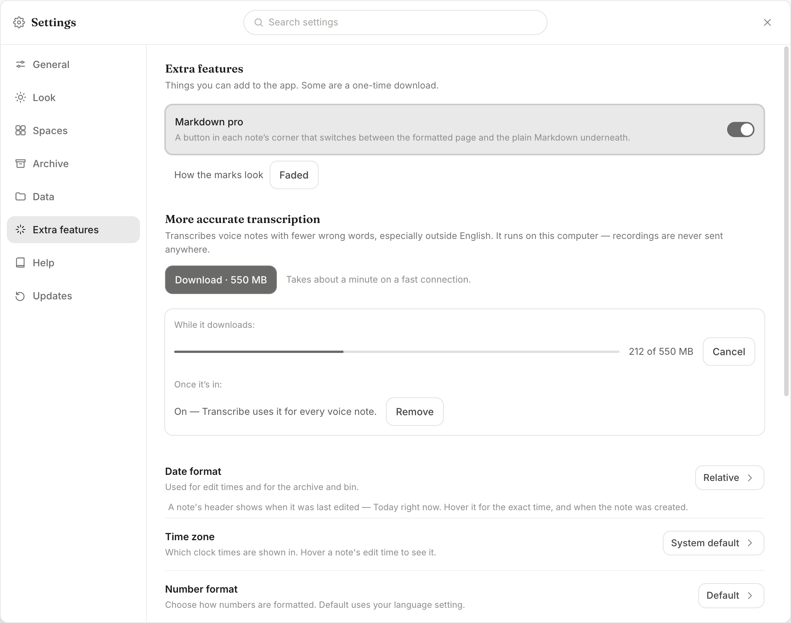

Transcribe a voice note
Done = right-click a voice note → Transcribe, and its words land as plain text under it, worked out on the computer itself, on Mac, Windows and Linux, without the app slowing down.
Pick: how Transcribe looks (6 Nov)
Photographed from the real app. The new piece is put into the real voice note using the app's own styles, but nothing in the app has changed yet. The real recording is 8 seconds long; the transcript text is from the test clips.
TodayThe voice note as it is now

AAn icon in the row, between skip-forward and the scissors
Tidy: the row keeps its look. Hover shows "Transcribe". Easy to miss for someone new.

BA "Transcribe" button at the end of the row
Clear wording, but the row gets crowded and the waveform shrinks to make room.

C"Transcribe" under the row — recommended
The easiest to spot, and the row is untouched. It shows only until the voice note is transcribed; then the transcript takes its place.

While it works
In the same spot: the bar, how far it is, and Cancel. On a slow computer, the "long time" line.


The transcript inside the voice note
A thin line under the row, then the words in the note's own text. The small button bottom-left is "Separate transcript from audio block" (its label shows on hover).

A long transcript: 10 lines, then it scrolls

After the clip has been edited
The words stay (you may have corrected them). A line above offers to redo them.

Settings → Extra features (your new entry)
Under Data, above Help. Markdown pro moves here as one on/off switch, along with "More accurate transcription". The boxed part shows the download's other two states.

Waiting on you
Nothing right now.
Checklist
- Plan
- Measure Base on your Mac
- Build: the Whisper program inside each download, running quietly in the background
- Build: "More accurate transcription — 550 MB" download (behind the scenes; 32 s on your connection, Cancel and Remove work)
- Build: each word's timing kept for the clip editor's "edit by the words"
- Build: Transcribe button + right-click item, progress bar, transcript inside the voice note, Separate button, the Settings row (after the clip editor is logged — shown to you first)
- You try it on the Mac
- Windows check
- Changelog line
- Docs
- Shipped
What you picked
- The button: right-click the voice note → Transcribe. Once it's done, it reads Transcribe again.
- The text: plain paragraphs straight under the voice note, broken where the speaker pauses. Other apps see ordinary text.
- Languages: worked out by itself for each recording, Korean included. No language setting.
- While it works: a thin bar under the voice note — Transcribing · 40% · Cancel. You can keep typing and playing. The text lands in one go, and one Cmd/Ctrl+Z takes it back out.
- Size: Base is built into the app. No download, and it works with no internet. Each download gets about 65 MB bigger.
- Smoothness: Whisper runs as its own separate program at low priority, on half the processor, one recording at a time, with Cancel any time.
- Slow computers: the bar says This will take a long time on this computer — about 6 min when the guess is over 2 minutes.
- Edited clip: the text stays as it is. Press Transcribe again to redo it.
- Transcribe again: the new text goes under the old, so words you corrected by hand are never deleted.
Base vs the bigger versions, on real voices (18 languages)
Mistakes in every 100 words (in every 100 letters for Japanese, Korean and Chinese). Lower is better. Real people reading, 30 clips per language.
| Language | Base 57 MB, built in | Small 190 MB | Turbo 550 MB |
|---|---|---|---|
| English | 8.5 | 5.7 | 4.8 |
| Spanish | 9.7 | 6.1 | 3.7 |
| French | 24.2 | 10.8 | 5.4 |
| German | 19.3 | 9.3 | 3.6 |
| Portuguese | 11.1 | 7 | 3.8 |
| Italian | 21.9 | 10.7 | 3.7 |
| Dutch | 37.5 | 19.6 | 9.6 |
| Russian | 15.8 | 8.9 | 4.4 |
| Polish | 40.5 | 19.7 | 6.1 |
| Turkish | 31.4 | 14.2 | 8.9 |
| Ukrainian | 43.8 | 32.4 | 10.1 |
| Arabic | 49.4 | 28.5 | 14.5 |
| Hindi | 100.7 | 39.7 | 26.7 |
| Vietnamese | 41.8 | 21.6 | 9.6 |
| Indonesian | 42.9 | 24.5 | 10.3 |
| Japanese | 28.3 | 13.7 | 4.4 |
| Korean | 11.7 | 7.1 | 4 |
| Chinese | 30 | 19.3 | 4.4 |
| 10 minutes, your Mac | 28 s | 47 s | 88 s |
| 10 minutes, processor only nearest to Windows / Linux | 33 s | 73 s | 183 s |
Hindi and Chinese Base scores are from before the script fix, so they look worse than the app now does.
Fixed: each language in its own words
Whisper picks one language from the first 30 seconds, whatever its size, so the 550 MB download wouldn't have helped. Base names the language correctly even from 2 seconds of speech. So the app now cuts a recording at its pauses, checks each stretch's language, and transcribes each stretch in its own language. A change of language starts a new paragraph.
| What | Result |
|---|---|
| English then Korean (1 min 42 s) | English paragraph, then a Korean paragraph, in 7.9 s |
| 10 minutes of English | 29 s (no slower than before) |
| Still a limit | English and Korean mixed inside one sentence are written in that stretch's language |
Silence, noise and typing
- Silence, background hiss and a beeping tone come back as "no words heard". Before the fix, Whisper made up "You" and "www.cabella.com".
- Whispering, someone far from the microphone and fast talking: nearly word-perfect. A noisy café: a few words wrong.
- Typing in a note while a 10-minute recording transcribes: no slower than normal (8 ms from key to letter).
Tried in the real app on your Mac
| What | Result |
|---|---|
| 9.7-minute recording | 33 s, in the background at low priority |
| Did the window stay smooth? | Yes. The longest stutter was 26 ms, too short to notice. |
| Cancel | Stopped within 1.5 s |
| Two at once | The second waited its turn, then ran |
- The first Transcribe after installing is slower on a Mac. It took about 20 seconds extra; later ones were fast. It will probably happen again after each update. You said that's fine.
- Not tried yet: the app as downloaded from the website (with macOS's "Open Anyway" step), an Intel Mac, Windows and Linux. Windows and Linux get their first test from a GitHub check that runs when you next push.
- The "long time" warning: its first guess was 5× too high, so it now waits until 15% is done before deciding.
Measured on your MacBook Air
Test recordings are the Mac's own voices with background noise added. They're cleaner than a real phone recording, so real results will be somewhat worse.
| What | Result |
|---|---|
| Added to each download | 8 MB Whisper program + 57 MB Base file |
| 10 minutes of speech, your Mac | 17–26 s |
| Same, processor only (nearest stand-in for Windows, Linux and Intel Macs) | ~36 s A typical Windows laptop is slower than your M4: guess 1–2 min, not measured. |
| English | Close to word-perfect on ordinary speech. American spelling ("factorize"). |
| Korean | About 1 word in 8 wrong. Picked the language by itself. |
Korean misses, from the test clip:
광합성 → 관합성 (photosynthesis) · 잎 → 입 (leaf → mouth) · 녹말 → 논말 (starch) · 빼기 → 대기 (minus) · 이로 → 1호
Windows and Linux
- Same button, same text, same languages. Everything comes inside the download, so no internet is needed.
- Slower than your Mac, because only the processor does the work. Slow computers get the "long time" line.
- It works on any voice note that plays, including Windows Voice Recorder and WhatsApp files. A recording that can't play can't be transcribed.
- Recordings up to 2 hours can be transcribed.
- Not tried on Windows, Linux or an Intel Mac.
Rules it has to follow
- The text is ordinary note text. The Whisper file lives inside the app, never in your notes or OneDrive.
- Only the behind-the-scenes part of the app runs Whisper. A bundled program has to be checked in the app itself, not just the test copy.
- It works alongside the clip editor (the other session), which uses the same voice note and the same right-click menu.